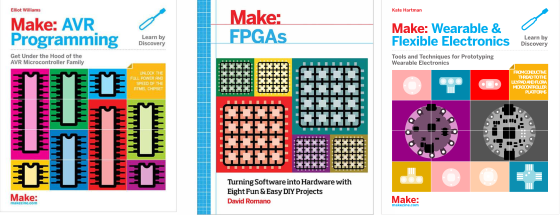
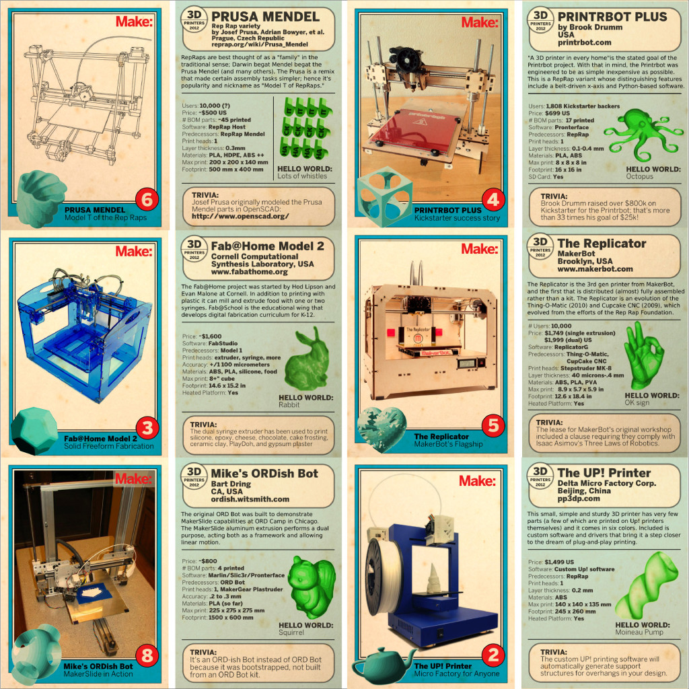
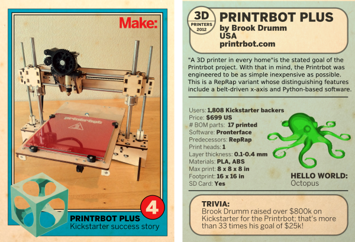
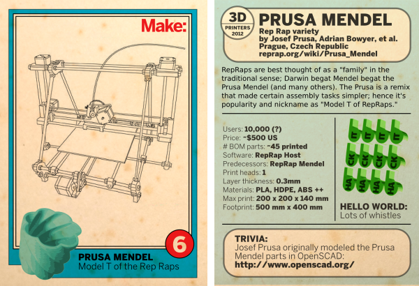
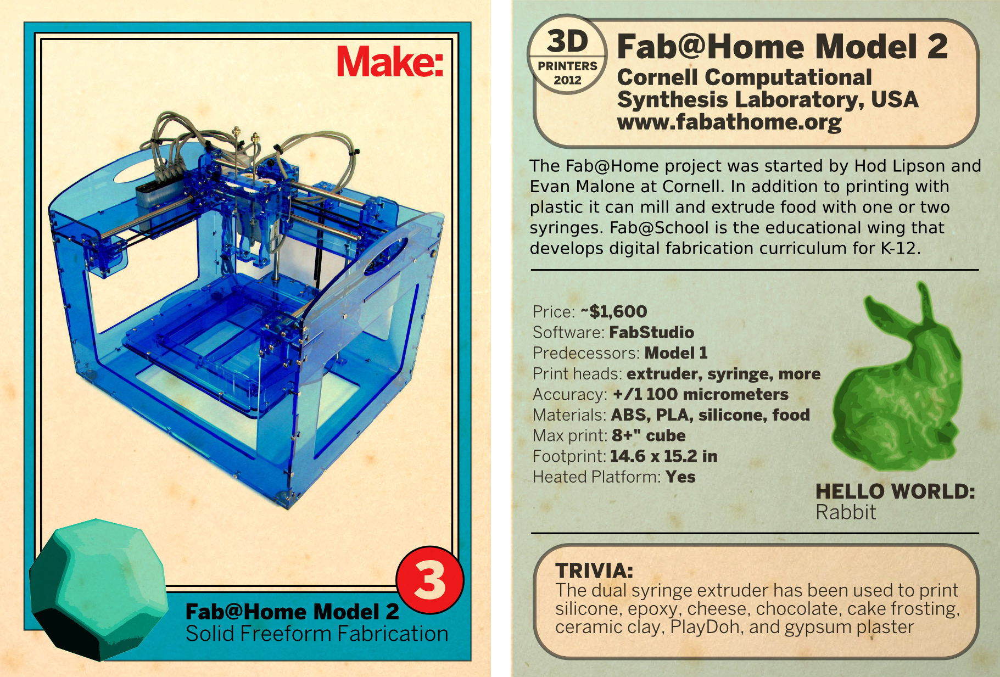
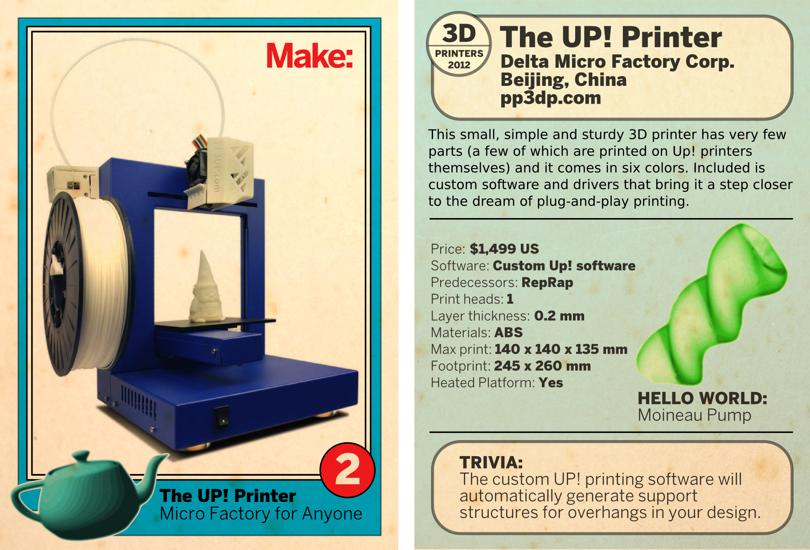
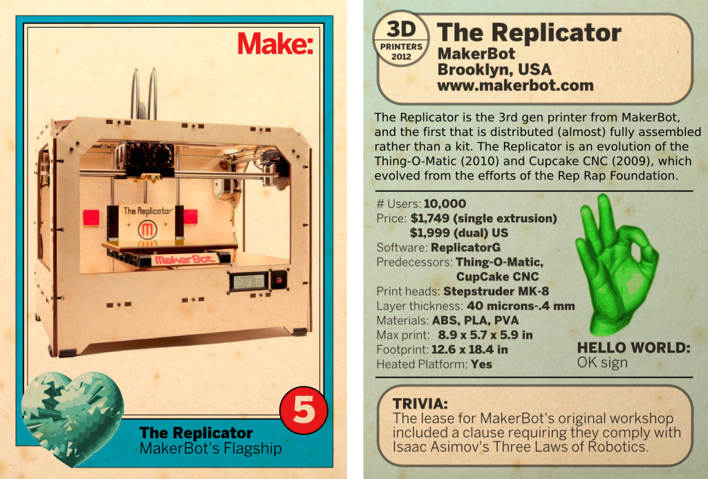

I did a few covers for Makermedia books. And then there was the 3D Printer Trading Cards (From the Future!) piece for the Make blog in 2012. It was a kind of speculative visual journalism to showcase recent 3D printer offerings. The conceit was that this was a box of fading and aged trading cards featuring 3D printers of the present, from the future. These were designed to promote the 3D printer beat at the 2012 Bay Area Maker Faire.





